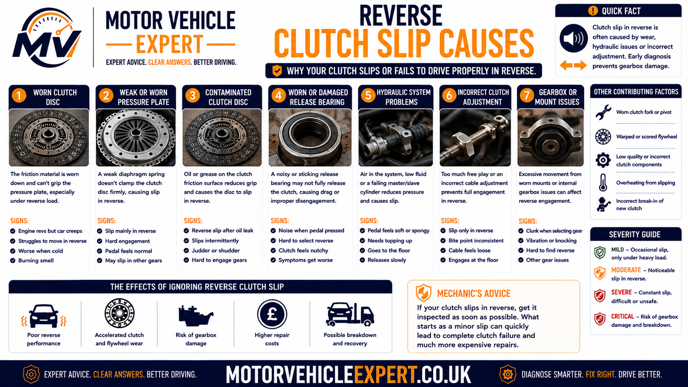
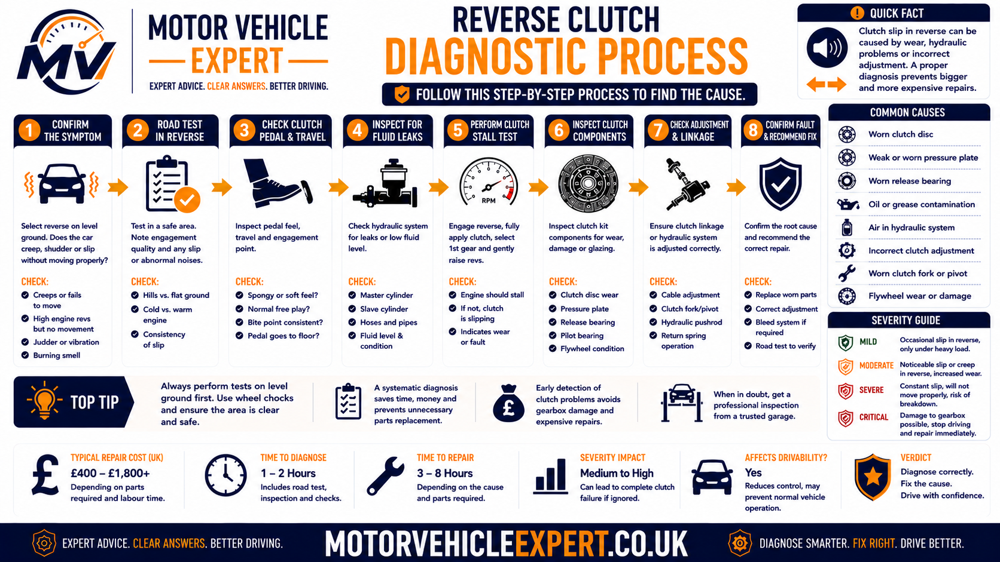
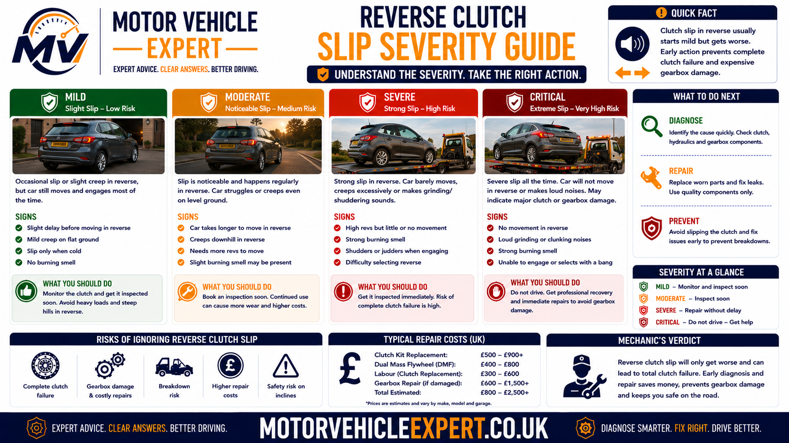
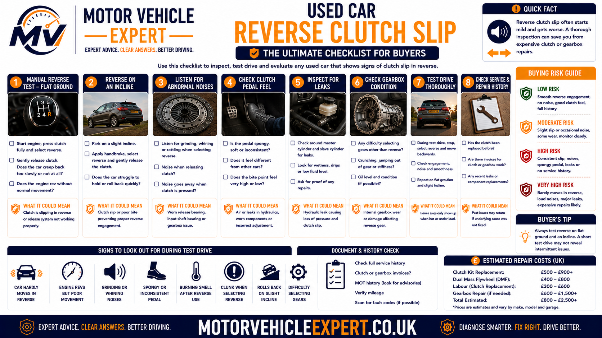

Why does the clutch slip in reverse?
A clutch slips in reverse when its friction surfaces cannot hold enough torque while the vehicle is being manoeuvred backwards. The clutch plate continues rotating at a different speed from the flywheel and gearbox input shaft, so engine revs increase without matching reverse movement. The lost energy is converted into heat.
Reverse often reveals clutch weakness because parking, driveway and trailer manoeuvres require the clutch to remain near its bite point for longer than an ordinary forward pull-away. Reversing uphill increases the demand further because the clutch must overcome vehicle weight and gravity while the driver controls speed precisely.
Strongest warning sign
The engine revs increase while the vehicle reverses slowly, pauses or fails to move with matching force.
Why reverse exposes it
Reverse manoeuvres commonly involve longer bite-point use, lower road speed and greater clutch heat.
Is it safe to drive?
Mild slip may allow limited driving, but smoke, severe smell, lost movement or poor control on a slope requires immediate attention.
Best next step
Compare reverse with first gear and higher gears, then inspect the clutch release system, oil leakage, friction components and flywheel.
Confirm whether the engine speed rises without matching reverse movement. A low-powered engine, dragging brake or steep gradient can make the car feel slow, but true clutch slip creates a clear separation between engine revs and vehicle speed.
Reversing uphill while holding the clutch near its bite point creates severe heat. Repeated testing can turn early wear into a burnt clutch, damaged pressure plate or flywheel repair.
Start with the Motor Vehicle Expert Diagnostics Hub to understand the structured fault-finding process, then record the reverse conditions, engine-speed flare, bite point, smells and recent repair history using the Motor Vehicle Expert Diagnostic App . These resources support diagnosis but cannot replace a physical clutch, hydraulic and flywheel inspection.
Symptoms of clutch slip in reverse
Reverse clutch slip is most noticeable when the engine responds to the accelerator but the vehicle does not move backwards with matching force. The car may hesitate, reverse slowly or require more engine speed than normal, particularly on a slope or during repeated parking manoeuvres.
The strongest evidence is a clear separation between engine speed and vehicle movement. If the rev counter rises while reverse speed remains weak, the clutch is losing torque between the flywheel and gearbox input shaft.
Engine revs rise
Engine speed increases quickly when the accelerator is pressed, but the car reverses slowly or does not respond with matching force.
Delayed reverse movement
The vehicle pauses before moving backwards or feels as though the clutch is taking too long to connect the engine and gearbox.
Weak reverse uphill
The car may reverse normally on level ground but struggle, slip or smell hot when backing up a driveway or incline.
High clutch bite point
Engagement may begin close to the top of the pedal travel. This can support a wear diagnosis but does not confirm slip by itself.
Burning clutch smell
Prolonged bite-point use converts engine energy into heat and can produce a sharp smell similar to overheated brakes or burnt friction material.
Worse during parking
Repeated forward-and-reverse manoeuvres can make the fault stronger as clutch temperature rises.
Reverse judder
The vehicle may shake as the clutch alternates between gripping and slipping, especially when friction surfaces are contaminated or heat damaged.
Pedal behaviour changes
A bite point that moves, a pedal that returns slowly or an inconsistent pedal feel may indicate a cable, hydraulic or release mechanism fault.
Forward drive later affected
A clutch first noticed slipping in reverse may later begin slipping in first gear or during heavy acceleration in higher gears.
Reverse-slip symptom combinations
Extra revs but normal movement
The car still reverses, but it needs noticeably more engine speed and clutch pedal control than before.
Weak movement and hot smell
Reverse speed falls while engine revs increase, and a burnt-friction smell appears after ordinary manoeuvring.
Smoke or almost no reverse drive
The clutch is generating severe heat and may be close to losing forward drive as well.
A steep gradient, low engine torque or dragging brake can make a car reverse slowly. True clutch slip causes the engine speed to increase without a proportional increase in reverse movement.
Balancing a vehicle on a reverse incline using the clutch bite point creates continuous slip and rapid heat. Use the brake or parking brake to hold the vehicle securely.
Why reverse gear can expose clutch slip
Reverse does not normally use a separate clutch. The same clutch plate, pressure plate and flywheel transmit torque whether the vehicle is moving forwards or backwards. Reverse reveals the fault because of the way the clutch is used during low-speed manoeuvring.
Drivers often keep the clutch partially engaged while controlling the vehicle's speed with fine pedal movements. This is useful for precise manoeuvring, but it means the friction surfaces remain at different speeds for longer and generate more heat.
1. Vehicle begins stationary
The engine and flywheel are rotating while the gearbox output, wheels and vehicle are initially stopped.
2. Clutch reaches the bite point
The pressure plate begins clamping the clutch plate and transmitting torque into the reverse gear train.
3. Driver controls low speed
The clutch may remain partially engaged to keep reverse movement slow and precise.
4. Weak friction overheats
A worn, glazed or contaminated clutch cannot grip firmly, so engine revs rise and additional heat builds.
Why the car may feel normal going forwards
A normal first-gear pull-away may use the bite point for only a brief period before the clutch is fully engaged. Reverse parking can require several seconds of partial engagement, making an early clutch fault much easier to notice.
Forward operation may also feel acceptable because the driver naturally uses more momentum and releases the clutch more quickly. This does not prove that the clutch is healthy.
A healthy clutch can tolerate ordinary reversing. Repeated poor technique can accelerate wear, but recurring slip during normal manoeuvring usually indicates limited friction capacity or incomplete engagement.
Why clutch slip is worse when reversing uphill
Reversing uphill places one of the heaviest normal take-off loads on a manual clutch. The friction surfaces must overcome the stationary vehicle's weight, gravity, tyre resistance and drivetrain inertia while the driver controls speed at the bite point.
A worn clutch may still reverse on level ground because the torque demand is relatively low. The same clutch may slip immediately on a steep driveway because its remaining friction capacity is below the torque required.
Gravity increases resistance
The clutch must produce enough torque to prevent the vehicle rolling forwards and then move it backwards up the incline.
Partial engagement lasts longer
Drivers often hold the clutch near its bite point to control reverse speed accurately on a confined driveway.
More throttle creates more heat
Extra engine speed increases the energy being converted into heat when the clutch is not fully gripping.
Heavy loads increase demand
Passengers, luggage, towing and commercial loads make reverse hill manoeuvres more demanding.
Repeated attempts compound damage
Each unsuccessful manoeuvre raises clutch temperature and reduces the remaining grip further.
Recovery space may be limited
Losing reverse drive on a slope can leave the vehicle difficult to control or reposition safely.
Safer reverse-hill technique
- Check the route and available space before starting.
- Use the parking brake to prevent uncontrolled rolling.
- Use only the engine speed genuinely required.
- Move positively rather than holding prolonged partial engagement.
- Pause and allow cooling if a hot friction smell appears.
- Stop the manoeuvre if slip becomes severe.
- Do not repeat the attempt simply to prove the fault.
Repeatedly increasing engine speed will not restore a worn clutch. It can overheat the assembly and leave the vehicle without usable forward or reverse drive.
Common causes of clutch slip in reverse
Reverse clutch slip develops when the clutch cannot create enough friction or clamping force, or when the release mechanism prevents full engagement. The underlying fault can involve ordinary wear, contamination, heat damage, hydraulics, cable adjustment or previous workmanship.
Worn clutch lining
Thin friction material has less capacity to hold engine torque during demanding reverse manoeuvres.
Likelihood: HighGlazed friction material
Repeated overheating can polish and harden the lining, reducing grip when the clutch becomes warm.
Likelihood: High after overheatingOil contamination
Engine or gearbox oil on the friction surfaces reduces grip and may cause both slip and reverse judder.
Likelihood: Medium to highWeak pressure plate
A worn diaphragm spring or heat-distorted pressure plate may not clamp the clutch plate firmly enough.
Likelihood: MediumHydraulic release fault
Retained hydraulic pressure or a sticking cylinder can leave the clutch partially disengaged.
Likelihood: System dependentIncorrect cable adjustment
Insufficient free play can prevent full clutch engagement when the pedal is released.
Likelihood: Cable systemsFlywheel heat damage
Heat spots, scoring or an uneven flywheel surface can reduce consistent friction and increase slip.
Likelihood: MediumIncorrect clutch components
An unsuitable clutch kit or release part may not provide the correct torque capacity or engagement geometry.
Likelihood: Higher after repairInstallation error
Contamination, incorrect tightening, misalignment or disturbed release components can cause slip after replacement.
Likelihood: Higher after recent workExcess vehicle load
Towing, commercial use or heavy loading can expose a clutch that still holds during lighter driving.
Likelihood: Load dependentRiding the clutch pedal
Resting a foot on the pedal may reduce pressure-plate clamping and create continuous light slip.
Likelihood: Driving dependentProlonged bite-point control
Holding reverse speed with partial clutch engagement creates heat and accelerates friction wear.
Likelihood: Common contributor
The underlying fault must be identified before replacement work begins. A new clutch can fail again if an oil leak, release fault or damaged flywheel is left unresolved.
A high-mileage vehicle may have worn friction lining, a heat-damaged flywheel and a leaking concentric slave cylinder at the same time. The whole clutch assembly should be assessed during gearbox removal.
Worn or glazed clutch friction material
The clutch plate relies on friction lining to grip the flywheel and pressure plate. As this lining wears thinner, its ability to transmit engine torque decreases. Repeated overheating can also glaze the material, producing a hard polished surface with reduced grip.
Reverse manoeuvres often expose this weakness early because the clutch remains partially engaged for longer. The plate may initially hold, then begin slipping as the driver adds throttle or the clutch becomes hotter.
Supporting symptoms
High bite point, hot smell, weak reverse uphill, delayed movement and slip that worsens during repeated manoeuvres.
How it progresses
Reverse-only weakness may develop into first-gear slip, higher-gear flare and eventual loss of drive.
Likely repair
Clutch kit replacement with inspection of the flywheel, release system, oil seals and mounting condition.
A clutch can still hold during gentle forward driving while struggling with the longer partial-engagement period used during reversing.
For the broader warning-sign pattern, read clutch slipping symptoms .
Oil contamination vs ordinary clutch wear
Ordinary clutch wear normally causes a gradual reduction in torque capacity. Oil contamination can make the behaviour less predictable because the friction material may grip, slip and judder differently as oil spreads across the plate.
Progressive and repeatable slip
- Bite point has gradually become higher.
- Reverse weakness has increased over time.
- Slip also appears under heavy forward acceleration.
- No obvious oil leakage is visible.
- Behaviour is relatively consistent.
Inconsistent grip and judder
- Clutch alternates between gripping and slipping.
- Reverse judder accompanies engine-speed flare.
- An oily or hot-friction smell develops.
- Oil is visible near the bellhousing.
- The fault returned after earlier clutch work.
Common contamination sources
Rear crankshaft seal
Engine oil can escape from the rear of the crankshaft and spread across the flywheel and clutch assembly.
Gearbox input shaft seal
Gearbox oil can travel along the input shaft and contaminate the centre of the clutch plate.
Cleaning an oil-soaked clutch plate is not normally a dependable repair. The contamination source should be corrected and the affected friction components replaced during the same operation.
For wider leak assessment and MOT wording, see oil leak advisory explained .
Weak or heat-damaged pressure plate
The pressure plate provides the clamping force that holds the clutch plate against the flywheel. A weakened diaphragm spring, distorted cover or heat-damaged friction face may reduce that force enough for the clutch to slip during reverse manoeuvres.
Weak diaphragm spring
Reduced spring force prevents the clutch plate from being held firmly against the flywheel.
Heat distortion
Repeated reverse slip can produce hot spots and uneven contact across the pressure plate face.
Release mechanism preload
Hydraulic pressure, incorrect cable adjustment or a binding release bearing can keep the pressure plate partly released.
The pressure plate is normally replaced with the friction plate and release bearing because reusing a weak or overheated cover can cause a new clutch to slip.
Dual mass flywheel involvement in reverse clutch slip
The flywheel provides the friction surface against which the clutch plate is clamped. Many modern manual vehicles use a dual mass flywheel to reduce engine vibration before it reaches the gearbox.
A dual mass flywheel does not usually create friction slip by itself. However, excessive internal movement, worn damping components, heat damage or an uneven friction surface can prevent smooth torque transfer and increase the repair required when the clutch is replaced.
Excessive internal movement
Worn springs and internal bearings can allow more movement between the two flywheel masses than the manufacturer permits.
Heat-damaged friction face
Prolonged reverse slip can create hot spots, scoring or surface distortion where the clutch plate contacts the flywheel.
Loss of vibration damping
Reduced damping may create rattling, knocking or reverse judder in addition to clutch slip.
Signs that increase suspicion of flywheel wear
- Rattling at idle that changes when the clutch pedal is pressed.
- A heavy knock during engine start-up or shutdown.
- Reverse judder as well as engine-speed flare.
- Vibration through the gear lever or vehicle floor.
- A previous clutch replacement that reused the old flywheel.
- Visible heat marks or scoring after gearbox removal.
- Measured movement outside the manufacturer's limits.
Release bearings, gearbox bearings, engine mounts and loose drivetrain components can create similar noises. The flywheel should be assessed against vehicle-specific movement, condition and heat-damage limits.
Gearbox removal accounts for much of the labour cost. A worn flywheel should be identified during clutch work so the owner does not pay for the same dismantling twice.
Hydraulic, cable and release-system faults
The clutch must engage fully when the pedal is released. A hydraulic, cable or release-mechanism fault can leave pressure on the pressure plate, reducing its clamping force even though the driver has removed their foot from the pedal.
These faults are especially important when reverse slip appears suddenly, follows hydraulic work or is accompanied by a changing bite point or incomplete pedal return.
Master cylinder fault
Internal restriction or seal failure may prevent hydraulic pressure from releasing correctly after the pedal rises.
External slave cylinder
A sticking slave cylinder can keep the release mechanism partly applied or produce inconsistent engagement.
Concentric slave cylinder
An internal hydraulic release bearing can leak, bind or fail to return fully and normally requires gearbox removal.
Incorrect cable free play
A cable adjusted too tightly can prevent the pressure plate from clamping fully when the pedal is released.
Release bearing binding
A damaged guide tube, fork or bearing can restrict return movement and leave continuous release pressure.
Pedal obstruction
A badly positioned floor mat, trim panel or pedal-linkage fault may stop the clutch pedal returning completely.
Clues that support a release-system fault
- The clutch pedal does not return fully.
- The bite point changes during the journey.
- Slip began after cable or hydraulic work.
- The pedal feels unusually light, heavy or inconsistent.
- Gear selection has also become difficult.
- Clutch-fluid level is falling.
- Fluid is visible near the master or slave cylinder.
- The fault changes after repeated pedal operation.
Some vehicles use the brake-fluid reservoir for the clutch hydraulic system. A falling fluid level or significant leak may therefore have wider safety implications and should be inspected immediately.
Compare sudden hydraulic pressure loss with clutch pedal goes to the floor and a pedal that fails to return with clutch pedal stuck down .
Why a new clutch may slip in reverse
A newly fitted clutch should hold torque during ordinary forward and reverse operation. Persistent slip should not automatically be dismissed as bedding in, especially when engine revs rise without matching vehicle movement.
Oil contamination
An unrepaired engine or gearbox seal leak can contaminate the new friction plate shortly after installation.
Flywheel reused in poor condition
A scored, polished or heat-damaged flywheel may prevent the new clutch from achieving consistent grip.
Incorrect clutch application
The fitted clutch kit may not match the engine, gearbox, flywheel or required torque capacity.
Incorrect pressure plate fitting
Uneven tightening, incorrect torque or unsuitable fasteners can affect pressure-plate clamping force.
Release preload
Incorrect cable adjustment or retained hydraulic pressure can keep the new clutch partially disengaged.
Installation contamination
Grease, oil or dirty handling during installation can reduce the friction available from the new clutch plate.
What to do after recent clutch work
- Record when the reverse slip first appeared.
- Keep the itemised repair invoice and warranty terms.
- Check whether the flywheel was replaced or reused.
- Confirm whether the slave cylinder and oil seals were inspected.
- Avoid repeated high-load testing.
- Return to the fitting garage promptly.
- Ask for the diagnosis and findings in writing.
Normal bedding should not produce severe engine-speed flare, smoke or difficulty reversing. Repeated use can overheat new components and complicate a warranty claim.
For the complete post-installation fault process, read clutch slip after replacement .
Clutch slips only in reverse vs slipping in all gears
A clutch that appears to slip only in reverse may be showing an early weakness exposed by prolonged bite-point use. Slip in first gear and during higher-gear acceleration usually indicates that the clutch has lost more of its overall torque capacity.
Early or condition-specific fault
- Forward pull-away still feels normal.
- Slip appears mainly during slow manoeuvring.
- Reversing uphill is significantly worse.
- Heat builds after repeated parking movements.
- Release-system or technique factors may contribute.
Developing clutch weakness
- Engine revs flare moving forwards and backwards.
- Hill starts are becoming weaker.
- A high bite point or burning smell may be present.
- Friction wear or contamination becomes more likely.
- Repair should be arranged promptly.
Advanced loss of torque capacity
- Slip appears under higher-gear acceleration.
- Road speed repeatedly fails to match engine speed.
- Heat and smell develop quickly.
- The clutch may be close to complete failure.
- Driving should be limited or stopped.
The absence of forward slip does not prove the clutch is healthy. Reverse may simply be the first condition demanding more friction capacity than the clutch can provide.
Compare forward pull-away symptoms with clutch slipping in first gear and heavy-load acceleration with clutch slip in high gears .
Reverse clutch slip vs reverse clutch judder
Slip and judder can happen during the same manoeuvre, but they describe different behaviour. Slip is a loss of torque transfer, while judder is vibration created by uneven engagement.
Engine revs rise without matching movement
- Reverse speed remains weak as revs increase.
- The vehicle may pause before moving.
- A burning friction smell can develop.
- The fault is worse uphill or when hot.
- Advanced failure can remove reverse drive.
The vehicle shakes during engagement
- The body vibrates through the bite point.
- The shaking may stop when fully engaged.
- Engine or gearbox mounts may contribute.
- Flywheel damage can worsen the symptom.
- Engine revs may remain relatively stable.
When slip and judder occur together
Oil contamination, glazing or heat-damaged friction surfaces can cause the clutch to alternate between gripping and sliding. The vehicle may shake while the rev counter also rises.
Rising engine speed confirms loss of grip. Body shake identifies uneven engagement. The combination strengthens suspicion of contamination or damaged friction surfaces.
For wider take-up vibration guidance, see clutch judder when pulling away .
Engine weakness vs clutch slip in reverse
A vehicle that struggles to reverse is not automatically suffering clutch slip. Low engine torque, unstable idle, a misfire, incorrect throttle response or a dragging brake can also make reverse movement difficult.
Engine speed rises freely
- The engine responds normally to throttle.
- Revs increase faster than reverse speed.
- A hot friction smell may appear.
- Reducing throttle may allow temporary grip.
- Slip worsens as the clutch heats up.
Engine speed and movement are both weak
- The engine hesitates, stutters or nearly stalls.
- Revs rise slowly rather than flaring.
- The engine may idle roughly.
- A warning light may be illuminated.
- The weakness continues after full clutch engagement.
Other faults that may restrict reverse movement
Dragging parking brake
A binding rear brake can increase the load needed to reverse and create heat or poor movement.
Seized brake caliper
A partially applied wheel brake can make the vehicle feel unusually heavy in both forward and reverse operation.
Engine-performance fault
Fuel, ignition, air or turbocharger faults may reduce low-speed torque without producing true clutch slip.
Genuine clutch slip should show a clear increase in engine speed without matching vehicle movement. Brake drag and engine weakness must be ruled out before gearbox removal.
Compare broader power-loss symptoms with car revs but will not accelerate and car feels slow to accelerate .
How a mechanic diagnoses clutch slip in reverse
Professional diagnosis should confirm genuine engine-speed flare, compare reverse with forward operation and identify why the clutch is not holding torque. Gearbox removal should follow supporting evidence, not assumptions based on one difficult manoeuvre.
1. Confirm reverse slip
Establish whether engine speed rises faster than vehicle movement during an ordinary reverse manoeuvre.
2. Compare level and uphill use
Record whether the symptom appears only under gradient or additional vehicle load.
3. Compare forward gears
Check first-gear pull-away and ordinary higher-gear acceleration for additional slip.
4. Assess pedal and bite point
Check pedal return, free play, bite-point position and changes as the vehicle warms.
5. Inspect the release system
Check hydraulic cylinders, cable adjustment, release movement and signs of retained pressure.
6. Look for contamination
Inspect the engine-to-gearbox joint and identify possible engine or gearbox oil leakage.
7. Assess flywheel evidence
Listen for rattle, shutdown knock and judder, and review previous clutch and flywheel repairs.
8. Inspect internally if justified
Remove the gearbox to inspect the clutch plate, pressure plate, flywheel, release system and accessible oil seals.

The workflow separates clutch wear from engine weakness, brake drag, hydraulic faults and technique-related overheating.
External checks before gearbox removal
- Check whether the clutch pedal returns fully.
- Check cable free play where adjustment is provided.
- Inspect the clutch-fluid reservoir and hydraulic components.
- Look for oil around the engine and gearbox joint.
- Check the engine idle and warning lights.
- Check for dragging brakes or a binding parking brake.
- Listen for flywheel and release-bearing noise.
- Review clutch, flywheel and seal replacement invoices.
- Confirm whether the vehicle is modified or heavily loaded.
- Record whether the fault changes when hot.
Review the structured approach in the Vehicle Diagnostics Hub and record reverse, gradient, temperature, bite-point and repair history evidence using the Motor Vehicle Expert Diagnostic App .
Repeated reversing on a gradient can overheat the clutch quickly. A technician should use only the minimum safe load needed to confirm the symptom and stop immediately if smoke or severe smell appears.
What different reverse clutch slip patterns may indicate
| Slip pattern | Fault areas to prioritise | Supporting checks |
|---|---|---|
| Slip only during slow reverse manoeuvres | Early clutch wear, release preload, excessive bite-point use | Compare forward pull-away and pedal return |
| Slip mainly reversing uphill | Limited friction capacity or weak pressure plate | Check forward hill starts and higher-gear load |
| Slip plus reverse judder | Contamination, glazing or flywheel surface damage | Inspect leakage, smell and flywheel symptoms |
| Slip worsens when hot | Worn lining, glazing or pressure-plate heat damage | Compare cold and normal warm operation |
| Pedal fails to return | Hydraulic, cable or release-system fault | Check cylinders, free play and release travel |
| Oil visible near the bellhousing | Rear crankshaft seal or gearbox input seal | Trace the leak before replacing the clutch |
| Slip began after clutch replacement | Installation, contamination, flywheel or adjustment fault | Return to the fitting garage under warranty |
| Vehicle moves poorly but revs do not flare | Engine weakness or brake drag | Check engine operation and wheel-brake release |
| Slip in reverse, first and higher gears | Advanced clutch wear or weak pressure plate | Limit driving and prepare for clutch replacement |
The final decision should combine road-test evidence, pedal and hydraulic checks, leak inspection and internal component condition.
Reverse clutch slip severity guide
Severity depends on how much engine speed separates from reverse movement, whether the vehicle remains controllable and whether heat, smoke, forward slip or pedal changes are developing.

Judge the risk together with burning smell, smoke, forward slip, hydraulic leakage, judder and flywheel noise.
Mild, occasional extra revs
Reverse movement remains predictable, the symptom is slight and there is no smell, smoke, forward slip, fluid leak or pedal change.
Record the conditions and arrange inspection if the symptom repeats or becomes stronger.
Repeated or worsening reverse slip
Engine revs flare during most reverse manoeuvres, uphill reversing becomes difficult or a hot friction smell develops.
Avoid unnecessary manoeuvring, steep slopes, towing and heavy loads before professional diagnosis.
Severe slip, smoke or lost movement
The engine revs with almost no vehicle movement, smoke appears, forward drive is affected or the vehicle cannot be controlled safely.
Stop in a safe position and arrange professional assistance or recovery.
Factors that increase urgency
- Slip worsens during one short manoeuvre.
- A strong burnt-clutch smell develops.
- Smoke appears near the engine and gearbox.
- The vehicle cannot reverse uphill.
- Forward gears begin slipping as well.
- The clutch pedal fails to return.
- Oil or hydraulic fluid is leaking.
- Heavy judder or flywheel knocking appears.
- The fault began immediately after clutch replacement.
- The vehicle rolls unexpectedly on a slope.
Once heat builds, clutch deterioration can accelerate quickly. Recovery is safer than continuing until the vehicle becomes stranded or uncontrollable during a manoeuvre.
Can you keep driving if the clutch slips in reverse?
Mild reverse-only slip does not always mean the clutch will fail immediately, but every slipping event creates heat. Repeated parking, reversing uphill or manoeuvring with the clutch partially engaged can turn a manageable fault into severe friction damage and loss of drive.
The decision to continue driving should be based on whether the vehicle remains predictable in both forward and reverse directions, whether the symptom is worsening and whether smell, smoke, fluid leakage, pedal changes or abnormal mechanical noise are present.
Mild and stable reverse slip
The rev flare is slight, forward driving remains normal and the vehicle can reverse safely without smoke, severe smell, leakage or changing pedal behaviour.
Repeated or worsening slip
The clutch slips during most reversing manoeuvres, struggles on modest gradients or begins producing a hot friction smell.
Severe slip or unsafe movement
The engine revs with almost no movement, smoke appears, forward drive is also affected or the vehicle cannot be controlled safely on a slope.
Stop driving immediately if:
- The vehicle cannot reverse or move forwards safely.
- Engine revs rise with almost no vehicle movement.
- Smoke appears around the engine and gearbox area.
- A strong burnt-clutch smell remains after stopping.
- The clutch pedal fails to return or changes suddenly.
- Hydraulic fluid is leaking or the reservoir level is falling.
- Forward gears begin slipping as well.
- Heavy judder, grinding or repeated knocking develops.
- The vehicle rolls unexpectedly during a slope manoeuvre.
- The fault worsens substantially during one journey.
Additional engine speed creates more heat when the clutch is not gripping. It may allow temporary movement, but it can damage the friction plate, pressure plate and flywheel and leave the vehicle without usable drive.
How to reduce clutch load before inspection
Avoid reversing uphill
Where practical, turn the vehicle around and approach the parking position so the steepest movement is made forwards.
Avoid towing and heavy loads
Additional weight increases the torque required during take-up and can make a weak clutch deteriorate more quickly.
Use the brake to hold position
Do not balance the vehicle on the clutch bite point while waiting or controlling rollback on a gradient.
Reduce repeated manoeuvring
Plan the parking movement before starting and avoid unnecessary forward-and-reverse corrections.
Allow the clutch to cool
Stop manoeuvring if a hot smell develops. Continuing immediately can compound heat damage.
Choose a safe stopping position
Avoid parking where clutch failure could leave the vehicle trapped, obstructing traffic or difficult to recover.
Stopping before severe overheating may protect the flywheel and pressure plate. Recovery can cost less than turning ordinary clutch wear into a complete clutch-and-flywheel replacement.
Will clutch slip in reverse fail an MOT?
Clutch friction wear and torque capacity are not normally tested as separate items during the standard UK MOT. Reverse clutch slip alone therefore does not automatically result in an MOT failure.
However, the tester must be able to move and position the vehicle safely. Related faults such as significant oil leakage, insecure engine or gearbox mountings, hydraulic leakage or another defect affecting control may be relevant in their own right.
Reverse clutch slip alone
Clutch lining thickness and torque capacity are not normally measured as individual MOT inspection items.
Vehicle cannot manoeuvre safely
Severe loss of reverse or forward drive may prevent the tester from positioning the vehicle or completing the test safely.
Serious engine or gearbox oil leak
A substantial leak may be assessed according to its severity, location and safety or environmental impact.
Clutch hydraulic leak
A hydraulic defect may be especially important where the clutch shares a fluid reservoir with the braking system.
Insecure powertrain mounting
A badly damaged engine or gearbox mounting may be relevant where it allows unsafe movement or compromises component security.
Engine fault mistaken for slip
Warning lights, emissions defects or poor engine running can be assessed separately during the MOT.
Why passing an MOT does not prove the clutch is healthy
The tester does not remove the gearbox, inspect the clutch lining, measure pressure-plate clamping force or assess the flywheel friction surface. A car can pass its MOT and still require an expensive clutch, hydraulic or flywheel repair.
| Condition | Likely MOT relevance | Recommended action |
|---|---|---|
| Mild reverse slip with no other defect | Not normally a direct failure item | Arrange diagnosis despite any MOT pass |
| Severe loss of reverse or forward movement | Test may not be completed safely | Recover and repair before the test |
| Significant engine or gearbox oil leak | May be recorded or fail depending on severity | Trace and repair the source |
| Hydraulic leak affecting shared fluid level | Potential braking-system relevance | Do not drive until inspected |
| Severely insecure engine or gearbox mounting | May be a testable safety defect | Repair before presenting the vehicle |
| Engine-management fault causing weak movement | Warning-light or emissions relevance possible | Diagnose engine and clutch separately |
Used-car buyers should test reverse operation directly. MOT validity does not prove that the friction plate, pressure plate, flywheel or release system is mechanically sound.
For the wider UK test position, read can a clutch fail an MOT? and use the Vehicle Diagnostics Hub to understand how MOT findings differ from mechanical diagnosis.
Clutch slip in reverse repair costs
The repair cost depends on whether reverse slip is caused by ordinary clutch wear, oil contamination, weak pressure-plate clamping, a release system fault or poor installation after earlier work.
These broad UK estimates are intended for planning in 2026 rather than as fixed quotations. Vehicle design, labour rates, parts quality, four-wheel drive, premium components and restricted gearbox access can change the final price substantially.
Reverse clutch slip inspection
Controlled road test, forward and reverse comparison, pedal checks, hydraulic or cable inspection and initial leak assessment.
£60–£150Clutch kit replacement
Replacement friction plate, pressure plate and release bearing where the fitted system uses a separate bearing.
£550–£1,100Clutch and dual mass flywheel
Replacement of the clutch kit and worn dual mass flywheel during the same gearbox-removal operation.
£900–£1,800+Rear crankshaft seal with clutch
Repair of an engine rear oil seal plus replacement of contaminated clutch components.
£700–£1,400+Input shaft seal with clutch
Repair of a gearbox input-area oil leak and replacement of the affected friction components.
£700–£1,500+Concentric slave cylinder
An internal hydraulic release bearing normally requires gearbox removal and is commonly renewed with the clutch.
£600–£1,200+Clutch master cylinder
Replacement and bleeding where the master cylinder prevents correct pedal return or full clutch engagement.
£180–£450External slave cylinder
Replacement of an externally mounted slave cylinder followed by bleeding and operational checks.
£150–£350Clutch cable adjustment or replacement
Adjustment of free play or replacement of a stretched, binding or damaged clutch cable.
£80–£300Solid flywheel assessment
Inspection and, where technically suitable, professional resurfacing or replacement of a heat-damaged solid flywheel.
£150–£600 additionalPost-replacement investigation
Inspection of contamination, flywheel condition, component compatibility, release adjustment and workmanship.
£0–£300 initial assessmentGearbox oil replacement
Correct gearbox oil may be renewed during clutch work where draining is required or the existing oil condition is poor.
£60–£180 additionalRequest the clutch-kit price and the likely total if the flywheel, concentric slave cylinder, oil seals or other release components are also found defective after gearbox removal.
Reverse clutch slip repair decision table
| Diagnosis or finding | Likely repair | Broad UK estimate | Priority |
|---|---|---|---|
| Mild reverse slip with no confirmed cause | Structured inspection and controlled road test | £60–£150 | Diagnose before replacing parts |
| Incorrect clutch cable free play | Adjust or replace the cable | £80–£300 | Prompt low-cost check |
| Worn clutch with serviceable flywheel | Clutch kit replacement | £550–£1,100 | High priority |
| Worn clutch and failed dual mass flywheel | Clutch kit and DMF replacement | £900–£1,800+ | Major repair |
| Oil-contaminated friction plate | Repair the leaking seal and replace the clutch | £700–£1,500+ | Repair source and damage together |
| Concentric slave cylinder fault | Slave cylinder and usually clutch replacement | £600–£1,200+ | Avoid duplicate gearbox-removal labour |
| Reverse slip after recent clutch work | Warranty inspection and installation review | Warranty dependent | Return promptly |
| Brake drag mistaken for clutch slip | Brake diagnosis and fault-specific repair | £100–£700+ | Correct brake fault first |
| Engine weakness mistaken for clutch slip | Engine diagnosis and fault-specific repair | £80–£1,000+ | Confirm rev flare before clutch work |
What should the repair quotation include?
- The exact clutch kit brand and included components.
- Whether the release bearing is included.
- Whether the concentric slave cylinder is included.
- Whether the dual mass flywheel is included or priced separately.
- How the existing flywheel will be inspected and measured.
- Whether gearbox oil replacement is included.
- Whether hydraulic bleeding is included.
- Whether accessible engine and gearbox oil seals will be inspected.
- Whether cable adjustment or hydraulic return will be checked.
- The parts and labour warranty period.
- The process for approving additional work.
A low clutch quote may exclude the flywheel, slave cylinder, oil seals, gearbox oil or additional labour. Compare exactly what is included and the warranty provided.
For a broader breakdown of clutch, flywheel and labour pricing, see the UK clutch replacement cost guide .
Should you buy a used car with clutch slip in reverse?
A used car that slips while reversing should be treated as having an unresolved mechanical fault until an independent inspection identifies the cause. The problem may involve ordinary clutch wear, but the credible repair scope can also include a dual mass flywheel, pressure plate, concentric slave cylinder, engine oil seal, gearbox input seal or poor workmanship following an earlier clutch replacement.
Do not rely on claims that the vehicle only needs more throttle, that reverse gear is naturally weak or that a recently fitted clutch merely needs bedding in. A healthy manual clutch should transfer torque without obvious engine-speed flare, persistent burning smell or delayed reverse movement during normal use.
Confirmed low-cost release fault
An independent inspection identifies a cable-adjustment or external hydraulic fault, the clutch friction surfaces remain serviceable and the purchase price allows for the repair.
Mild slip with uncertain repair scope
The car reverses on level ground, but the clutch, flywheel, hydraulics and oil seals have not been inspected and there is no reliable repair estimate.
Severe slip, smoke or poor history
The engine revs sharply with little reverse movement, the vehicle cannot reverse uphill, smoke or a strong smell develops or recent clutch work cannot be supported by an invoice and warranty.

Do not deliberately abuse the seller's clutch with repeated steep reverse starts or prolonged bite-point use. Normal manoeuvring should provide enough evidence to justify further inspection.
Before starting the engine
Review the repair history
- Look for an itemised clutch replacement invoice.
- Confirm the date and mileage of the work.
- Check which clutch kit was fitted.
- Ask whether the flywheel was replaced or reused.
- Confirm whether the slave cylinder was renewed.
- Check whether oil seals were inspected.
- Review the parts and labour warranty.
Inspect the parked vehicle
- Confirm the engine is genuinely cold where possible.
- Look beneath the car for fresh fluid leakage.
- Check that the clutch pedal returns fully.
- Inspect the engine and gearbox joint where visible.
- Check for warning lights before start-up.
- Ask when the reverse problem first appeared.
- Check whether the vehicle is parked on a slope deliberately.
During the test drive
Level-ground reversing
Reverse slowly using normal pedal control. Engine speed and vehicle movement should remain proportionate without excessive rev flare.
First-gear comparison
Move away forwards normally and compare the bite point, engine-speed response and quality of clutch engagement.
Gradient behaviour
Observe an ordinary modest incline where safe. Do not repeat steep reversing manoeuvres simply to force the symptom.
Higher-gear acceleration
Under normal acceleration, check whether engine revs flare in fourth, fifth or sixth gear as road load increases.
Pedal and bite point
Check whether the bite point is unusually high, changes when warm or is accompanied by incomplete pedal return.
Smell, noise and vibration
Note any burnt-friction smell, reverse judder, flywheel rattle, shutdown knock or release-bearing noise.
Questions to ask the seller
- When did the reverse clutch slip begin?
- Is it worse on a slope, when hot or with extra vehicle load?
- Does the clutch also slip in first or higher gears?
- Has a burning clutch smell or smoke appeared?
- Has the clutch kit been replaced previously?
- Was the dual mass flywheel replaced or reused?
- Were the rear crankshaft and gearbox input seals inspected?
- Has the clutch master or slave cylinder been replaced?
- Is there an itemised invoice and valid warranty?
- Will the seller permit an independent inspection?
Clutch friction condition and flywheel wear are not fully assessed during the standard MOT. A vehicle can have a valid certificate and still require an expensive clutch, flywheel or hydraulic repair.
Until the fault has been dismantled and inspected, allow for the possibility of a clutch kit, flywheel, concentric slave cylinder and oil-seal repair rather than assuming the cheapest explanation.
Accept, negotiate or walk away?
The correct decision depends on symptom severity, documentary evidence, the value of the vehicle and whether the purchase price reflects the credible complete repair cost.
| Vehicle condition | Recommended decision | Reason |
|---|---|---|
| Minor cable or external hydraulic fault confirmed | Consider buying with repair allowance | The repair scope is supported by evidence |
| Mild reverse slip with no diagnosis | Negotiate heavily or pause | Internal clutch and flywheel condition remain unknown |
| Reverse slip plus burning smell | Assume clutch replacement risk | Heat and friction damage are likely |
| Slip plus judder or flywheel noise | Assume clutch and flywheel risk | The repair may exceed £1,000 |
| Smoke or almost no reverse movement | Walk away | The clutch may be close to complete failure |
| Fault began immediately after replacement | Require warranty resolution first | Installation or contamination faults may remain |
| Seller refuses independent inspection | Walk away | The financial risk cannot be assessed properly |
| Price reflects clutch and DMF replacement | Consider with additional contingency | Hydraulic, seal or gearbox costs may still appear |
Pre-diagnostic reverse clutch slip checklist
Accurate observations help the technician reproduce the problem without repeatedly overheating the clutch. Record the conditions clearly and avoid aggressive or prolonged reverse testing.
Record when it happens
- First manoeuvre of the day
- After the vehicle becomes warm
- Level ground
- Reversing uphill
- With passengers or luggage
- After repeated parking movements
Record the symptoms
- Engine-speed flare
- Delayed reverse movement
- High or changing bite point
- Burning smell
- Judder or vibration
- Smoke or loss of drive
Record related evidence
- First-gear behaviour
- Higher-gear slip
- Pedal return
- Oil or hydraulic leakage
- Flywheel or bearing noise
- Recent clutch repair details
Safe checks a driver can make
- Check whether the clutch pedal returns fully.
- Confirm whether the bite point has changed.
- Look beneath the vehicle for fresh fluid leakage.
- Check whether all gears select normally.
- Listen during engine start-up and shutdown.
- Check whether the engine idles smoothly.
- Compare first gear and reverse without excessive load.
- Record whether the problem worsens when warm.
- Stop testing if the smell, smoke or slip increases.
Review the Motor Vehicle Expert Diagnostics Hub for the wider diagnostic process, then organise the reverse, gradient, temperature, bite-point and repair-history evidence using the Motor Vehicle Expert Diagnostic App .
Checks to leave to a competent technician
- High-load clutch slip confirmation.
- Hydraulic pressure and pedal-return testing.
- Working beneath a raised vehicle.
- Brake-drag and parking-brake assessment on lifting equipment.
- Removing the gearbox.
- Measuring dual mass flywheel movement.
- Inspecting clutch lining and pressure-plate condition.
- Assessing flywheel run-out and heat damage.
- Replacing oil seals and bleeding the clutch system.
Clutch, gearbox and brake inspection requires correct lifting equipment, suitable support points, level ground and competent working procedures.
Clutch slipping in reverse: key takeaways
Reverse creates prolonged clutch load
Low-speed manoeuvring often keeps the clutch partially engaged for longer than an ordinary forward pull-away.
Engine-speed flare is the key clue
True slip produces rising engine revs without a proportional increase in reverse movement.
Reverse-only slip can be an early warning
The clutch may still feel acceptable going forwards while reverse manoeuvres expose limited friction capacity.
Reversing uphill raises the risk
Gravity, vehicle weight and prolonged bite-point use create high torque demand and heat.
The fault may not be clutch wear alone
Oil contamination, pressure-plate weakness, hydraulics, cable adjustment and flywheel damage can all contribute.
Used-car buyers need evidence
Obtain an independent inspection and price the credible complete repair before purchasing.
Reverse clutch slip should be diagnosed before repeated manoeuvring creates severe heat damage. Confirm genuine engine-speed flare, compare forward operation, inspect the release system and leaks, and assess the clutch, pressure plate and flywheel as one connected assembly.
Related clutch and diagnostic guides
Use these live Motor Vehicle Expert pages to compare reverse clutch slip with first-gear slip, higher-gear slip, clutch judder, pedal faults, overheating and broader vehicle-diagnostic symptoms.
Clutch slipping symptoms
Understand the complete warning-sign pattern, including engine-speed flare, weak acceleration and burning smell.
Clutch slipping symptoms →Clutch slipping in first gear
Compare reverse manoeuvring with forward pull-away slip and first-gear take-off load.
First-gear clutch slip →Clutch slip in high gears
Learn why worn clutches commonly slip under heavy torque in fourth, fifth or sixth gear.
High-gear clutch slip →Clutch slip after replacement
Review installation, contamination, flywheel and release-system faults after recent clutch work.
New clutch slip diagnosis →Clutch judder when pulling away
Compare engine-speed flare with shaking, flywheel faults and uneven friction engagement.
Clutch judder guide →Clutch vibrates in first gear
Separate clutch slip from first-gear vibration, mounting movement and engine shake.
First-gear vibration guide →Burnt clutch symptoms
Understand clutch overheating, smoke, smell and the warning signs of severe friction damage.
Burnt clutch symptoms →Clutch burning smell
Compare clutch heat with brake, oil, rubber and electrical smells.
Clutch smell guide →High clutch bite point
Learn how wear, cable adjustment and hydraulic design affect clutch engagement position.
High bite point guide →Clutch pedal goes to the floor
Diagnose hydraulic pressure loss, master-cylinder and slave-cylinder faults.
Clutch pedal pressure guide →Clutch pedal stuck down
Understand why a clutch pedal may fail to return and when recovery is required.
Clutch pedal stuck guide →Clutch noise when pressed
Compare release-bearing, fork, pressure-plate and gearbox noises.
Clutch noise guide →Car revs but will not accelerate
Compare clutch slip with engine, automatic transmission and drivetrain faults.
Revs without acceleration →Can a clutch fail an MOT?
Understand the difference between mechanical clutch condition and the standard UK MOT inspection.
Clutch MOT guide →UK clutch replacement costs
Compare clutch kit, flywheel, hydraulic and labour costs before authorising repairs.
Clutch replacement costs →Vehicle Diagnostics Hub
Learn how symptoms, operating conditions and evidence are used to narrow down vehicle faults.
Explore vehicle diagnostics →Diagnostic App
Organise reverse, gradient, bite-point, smell and repair-history evidence before visiting a garage.
Open the Diagnostic App →Clutch slipping in reverse FAQs
These visible answers match the FAQ structured data in the page head.
Why does my clutch slip in reverse?
A clutch may slip in reverse because worn or glazed friction material, oil contamination, weak pressure plate clamping, incorrect adjustment or a release-system fault prevents the clutch from holding the torque required during low-speed reversing.
What are the symptoms of clutch slip in reverse?
Common symptoms include rising engine revs with weak reverse movement, delayed take-up, a high bite point, burning clutch smell, difficulty reversing uphill and slip that becomes worse during repeated manoeuvres.
Can a clutch slip only in reverse?
A clutch may appear to slip only in reverse because reversing often requires prolonged bite-point control and higher low-speed load. The clutch may still be worn even if forward driving initially feels normal.
Why does the clutch slip more when reversing uphill?
Reversing uphill requires the clutch to overcome gravity and vehicle weight while the driver controls speed with partial engagement. This creates high torque and heat that can expose worn or contaminated friction surfaces.
Why does reverse create more clutch smell?
Parking and reversing manoeuvres often keep the clutch partially engaged for longer than normal forward driving. Prolonged slip converts engine energy into heat and can create a strong burnt-friction smell.
Can oil contamination cause clutch slip in reverse?
Yes. Engine oil from a rear crankshaft seal or gearbox oil from an input shaft seal can contaminate the clutch lining, reducing friction and causing slip, judder, burning smells and inconsistent engagement.
Can a weak pressure plate cause reverse clutch slip?
Yes. A worn, distorted or heat-damaged pressure plate may not clamp the clutch plate firmly enough against the flywheel, allowing it to slip during demanding reverse manoeuvres.
Can a dual mass flywheel cause clutch slip in reverse?
A dual mass flywheel does not normally cause friction slip on its own, but excessive movement, heat damage or an uneven friction surface can contribute to poor clutch engagement, judder and increased repair scope.
Can hydraulic clutch faults cause reverse slip?
Yes. A master cylinder, slave cylinder, restricted hydraulic return or release-bearing fault can prevent the clutch from engaging fully and reduce available clamping force.
Can a new clutch slip in reverse?
A new clutch can slip because of contamination, incorrect installation, unsuitable components, poor flywheel condition, incorrect cable adjustment or a hydraulic release fault. Persistent slip should be returned to the fitting garage.
Is reverse clutch slip the same as reverse judder?
No. Clutch slip causes engine speed to rise without matching vehicle movement, while judder causes shaking during engagement. Worn or contaminated friction surfaces can produce both symptoms.
Does reverse clutch slip get worse when hot?
Yes. Repeated manoeuvring creates heat, and a worn, glazed or contaminated clutch may lose more grip as its temperature rises.
Can I keep driving if the clutch slips in reverse?
Limited driving may be possible if the slip is mild and forward operation remains predictable, but worsening slip, smoke, burning smells, pedal changes or difficulty controlling the vehicle requires prompt inspection.
When should I stop driving with reverse clutch slip?
Stop driving if the vehicle cannot reverse or move forward safely, the engine revs with almost no movement, smoke appears, a strong burning smell persists, drive is being lost or the pedal changes suddenly.
How is clutch slip in reverse diagnosed?
Diagnosis includes confirming engine-speed flare, comparing reverse with first gear and higher gears, checking the pedal and bite point, inspecting the release system and oil leaks, and examining the clutch and flywheel if gearbox removal is justified.
Will clutch slip in reverse fail an MOT?
Clutch wear is not normally tested as a separate MOT item, so reverse clutch slip alone does not automatically cause failure. Related serious leaks, insecure mountings or another fault affecting safe control may still be relevant.
How much does reverse clutch slip cost to repair in the UK?
A clutch replacement commonly costs several hundred pounds in the UK and can exceed one thousand pounds when a dual mass flywheel, concentric slave cylinder, oil seal or difficult gearbox-removal procedure is also required.
Should I buy a used car with clutch slip in reverse?
Treat reverse clutch slip as an unresolved mechanical fault. Arrange an independent inspection, review clutch and flywheel invoices and price the credible complete repair before negotiating or buying the vehicle.